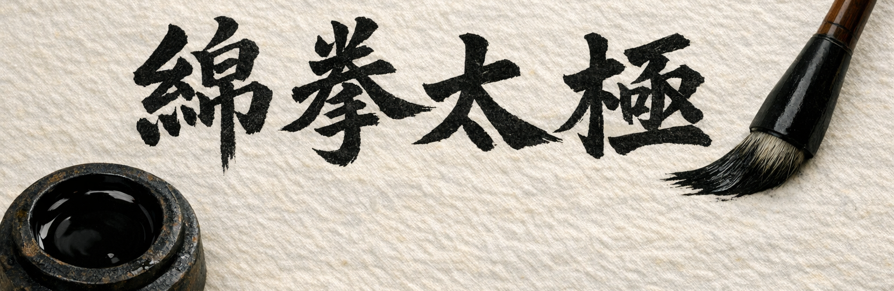

Yuan He Tai Ji es el resultado de más de dos décadas de práctica, estudio y reflexión en torno al Tai Ji Quan.
Mi camino se ha visto profundamente influido por la enseñanza del maestro Haoqing Liu, con quien tuve la fortuna de aprender durante más de quince años. A través de su transmisión conocí una tradición rica en matices que integra la herencia del estilo Yang de la línea de Niu Chunming, el enfoque desarrollado por Hong Junsheng y principios del Qi Gong taoísta, conformando un marco de práctica amplio y profundamente coherente.
A lo largo de estos años también he explorado otras líneas, autores y enfoques, contrastando métodos, principios y formas de entender el arte. De ese proceso surgió una propuesta metodológica personal para organizar, interpretar y transmitir la práctica, especialmente orientada a facilitar su comprensión en el contexto occidental. Esta propuesta busca reducir la dependencia de términos y conceptos chinos excesivamente abiertos o polisémicos que, con frecuencia, dan lugar a interpretaciones ambiguas o incluso contradictorias.
Yuan He Tai Ji es una propuesta metodológica para el estudio y la práctica del Tai Ji Quan, fundamentada principalmente en la enseñanza recibida del maestro Haoqing Liu y enriquecida por mi propia experiencia como practicante, docente e investigador.
No pretende constituir un nuevo estilo ni establecer un sistema independiente. Su propósito es ofrecer una forma clara, estructurada y coherente de aproximarse a los principios tradicionales del Tai Ji Quan, integrando herramientas de análisis contemporáneas y una mirada crítica frente a los dogmatismos infundados y a la enorme cantidad de información, y desinformación, que circula actualmente sobre este arte.
La propuesta se apoya principalmente en los principios del estilo Yang de la línea de Niu Chunming, incorporando también aportaciones procedentes del enfoque de Hong Junsheng y de principios del Qi Gong taoísta. Todo ello se presenta desde una perspectiva funcional y pedagógica, orientada a hacer la práctica más comprensible sin perder profundidad ni fidelidad a los principios que la sustentan.
En esencia, Yuan He Tai Ji aspira a ser un camino claro y bien estructurado para quienes buscan una práctica rigurosa, reflexiva y comprensible, manteniendo vivo el espíritu tradicional del Tai Ji Quan mientras dialoga con las necesidades y formas de pensamiento de nuestro tiempo.
Esta guía no pretende establecer una verdad definitiva ni presentarse como una autoridad última. Se trata de una propuesta metodológica e interpretativa, una forma concreta de organizar la práctica y comprender los conceptos clásicos a partir de la experiencia acumulada durante años de estudio, enseñanza y aprendizaje.
Su objetivo no es sustituir otras visiones ni excluir otros enfoques, sino ofrecer una herramienta que pueda resultar útil tanto a quienes se inician en el camino del Tai Ji Quan como a practicantes con experiencia que deseen ampliar, contrastar o profundizar en su comprensión.
Mi deseo es que esta web sirva de acompañamiento en ese recorrido personal. Si sus contenidos ayudan al lector a observar con mayor claridad, a practicar con mayor criterio y a desarrollar una comprensión más profunda de los principios del Tai Ji Quan, habrá cumplido plenamente su propósito.